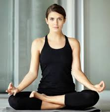

Yoga For Brain
Mental Fitness
Home
Padmasana (Lotus pose)

INFO OF PADMASANA
Go To Physical Fitness
For vedio click here
Sarvangasana
INFO OF SARVANGASANA
Go To Physical Fitness
For vedio click here
Halasana (Plow pose)
INFO OF HALASANA
Go To Physical Fitness
For vedio click here